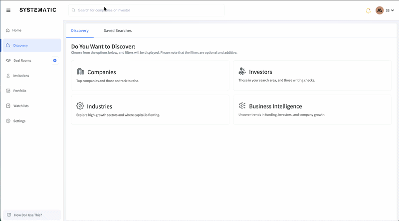
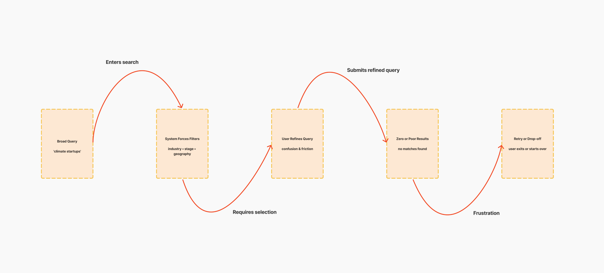
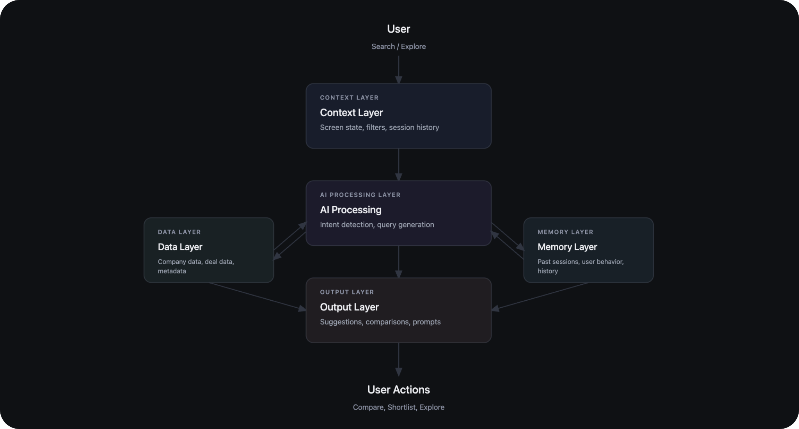
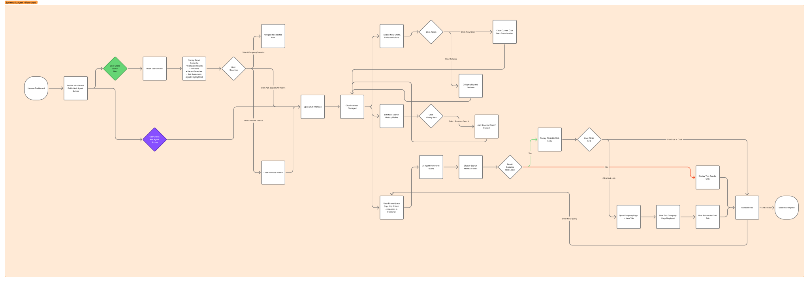
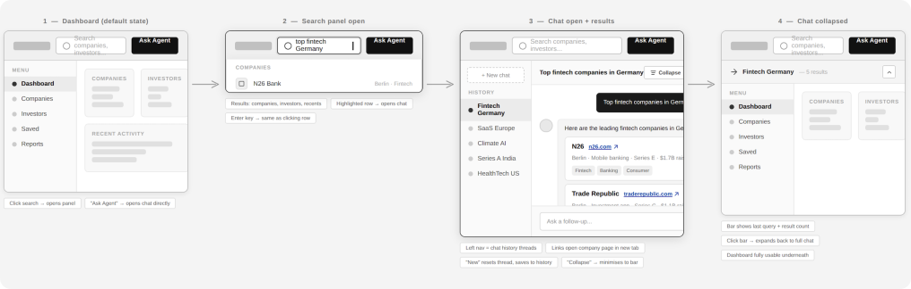
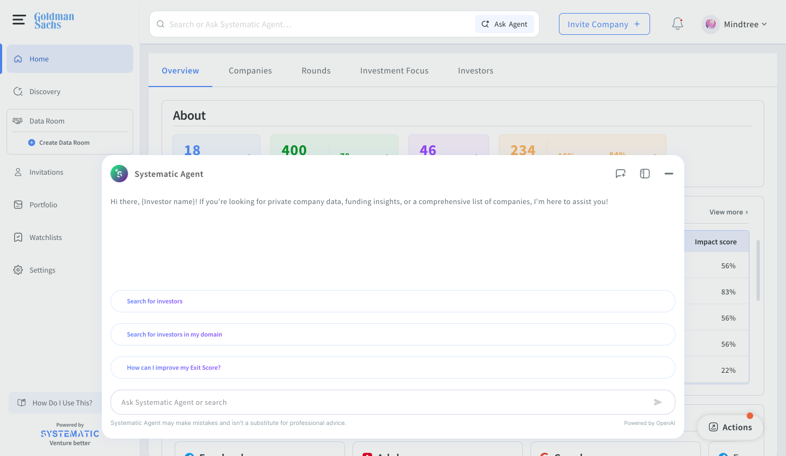

More than one in three searches led to no usable output or forced query restarts.
Case Study 01 / Systematic Agent
Investors were surrounded by data, but still losing time when they needed actionable insight under pressure.
View Case StudyThe Hook
The existing experience rewarded users who already knew exact filters, taxonomy labels, and query structure. Everyone else kept re-running searches, reopening tabs, and trying to reconstruct context from memory. Data existed. Decision velocity didn’t.
Problem Visualization
The workflow looked functional on paper, but failed in real decision sessions:

Research & Insights
More than one in three searches led to no usable output or forced query restarts.
Users started with exploratory language, then got trapped by rigid filter-first architecture.
Users spent too much effort translating intent into system vocabulary before finding signal.

The Tension
Improve filters. Better controls, better labels, better defaults.
Add a chatbot. Let users ask for insights conversationally.
→ Filters without intelligence remain rigid. Chat without context becomes generic. Both fail in isolation.
Key Decision
We didn’t build a chatbot. We built a system that understands context.
Context had a concrete definition in the product:
Solution Approach
Assistant reads current screen state so answers are tied to live workflow context, not generic summaries.
Support appears where decisions happen, reducing tab-switching and preserving cognitive flow.
Prompt chips guide users toward high-value actions without forcing rigid command syntax.
System remembers prior exploration to avoid repetitive setup and repeated discovery loops.
Responses produce next-step actions: compare, shortlist, export, and continue analysis.

Design Evolution
Early concepts
Existing workflow — fragmented, multi-step, and difficult to navigate.

Refined mid-fidelity
Explored ways to bring AI directly into the workflow and reduce navigation overhead.

Production candidate
Final direction — a context-aware assistant embedded within the core experience.

Interaction Details
Assistant opens progressively to preserve focus and avoid layout shock in dense data views.
Users can move between classic search and AI mode without losing work-in-progress context.
Subtle status updates communicate model progress and confidence without noisy interruptions.
Impact
What Didn’t Work
Learnings
My Role
Led UX for the AI interaction model, defined the context-driven product experience, and translated ambiguous AI behavior into a predictable interaction system.
Collaboration
Worked tightly with PM and engineering on state architecture, interaction sequencing, response patterns, and launch measurement criteria.
Next Steps